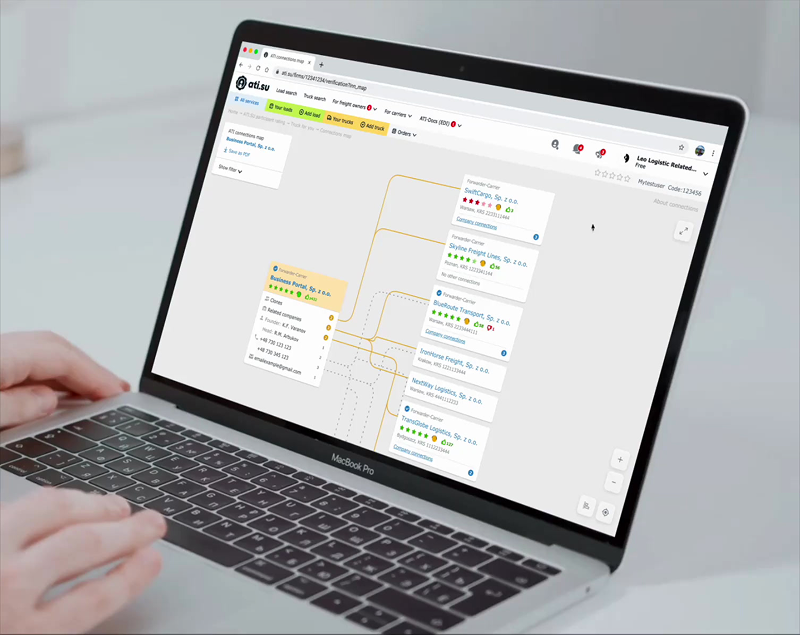

An interactive relationship visualization tool for the largest freight exchange in CIS — helping logistics companies verify partners in minutes instead of hours.
Company
ATI.SU
Role
Senior UX/UI Designer
Year
2021
Platform
Web (Desktop)
Interactive connections map — exploring company relationships in real time
Results
7 min
Verification time, down from 45–60 min per company
+22%
Growth in paid subscription upgrades within first 3 months
15K+
Users adopted the feature within 3 months of launch
+30%
More "warm leads" identified by sales teams through indirect connections
1 in 3 new subscribers cited the connections map as their primary reason for upgrading (post-purchase survey). Day-1 retention: 72%. Day-7 retention: 54%.
Context
ATI.SU is the leading B2B freight exchange platform in CIS with 500K+ registered companies, 250K+ daily cargo listings, and 70K+ trucks. Users work with massive amounts of data that's nearly impossible to analyze manually.
In logistics, a critical challenge is quickly and reliably evaluating partners. In interviews, risk managers and sales reps reported spending up to 45–60 minutes collecting and cross-checking data across multiple registries before making a single decision.
Discovery & Research
I conducted 12 in-depth interviews with risk managers, sales representatives, and account managers to understand their workflows and pain points.
Key insights
Verification of a single company required switching between 4–6 external registries and databases
Indirect connections (shared phone numbers, emails, founders) were the most valuable but hardest to find manually
Sales teams missed "warm lead" opportunities because relationships between companies weren't visible
Users needed different levels of detail — a quick overview vs. deep investigation
Design Approach
The core challenge was representing complex, multi-layered relationship data in a way that's immediately understandable. I explored several approaches before landing on an interactive graph-based map.
Why a graph map, not a table
Tables work for linear data. But relationships are networks — a company can be linked to 5 others through a shared founder, who also has a phone number tied to 3 more entities. A spatial representation makes these patterns visible at a glance.

Key design decisions
Company cards instead of abstract nodes: Each node displays rating, location, registration number, recommendations, and complaints — users can make decisions without drilling in
Visual encoding of tie strength: Direct ties (clones, related companies, founders) shown as strong lines; indirect ties (shared phone/email) shown as lighter connections
Progressive disclosure: Start with closest connections, expand to 2–3 levels on demand, with smooth transitions preserving spatial context
Hover-to-isolate: Hovering highlights one company's network while dimming the rest
Export to PDF: Users can save the current map state for compliance documentation